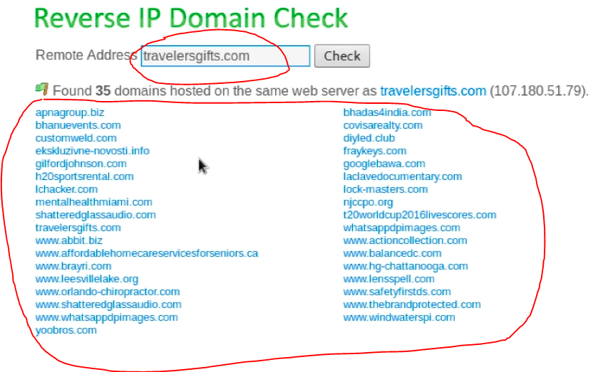

YouGetSignal:
Bazı sunucularda birden fazla websitesi saklanabiliyor, olabiliyor. İşte bu tarz durumlar için YouGetSignal aynı ip adresini kullanan ilişkili bütün websitelerini gösteriyor. yani websitesinden ip ye değil de, ip den websitelerini bulabilmemize (reverse ip) olanak sağlıyor. Bu yönteme reverse ip deniyor. Bu sayede aynı ip de bulunan ama güvenliği daha düşük bir websitesini ele geçirip sisteme sızabilirsek, daha güvenli olan diğer websiteleri ile aynı sunucu da aynı ip de olacağımız için diğer websitelerine de erişebileceğiz.
İşte YouGetSignal üzerinden bir reverse ip domain check sonucu;
